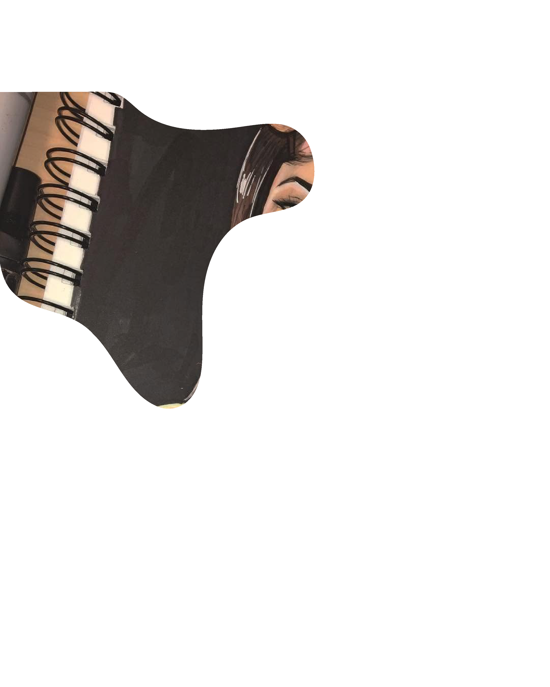
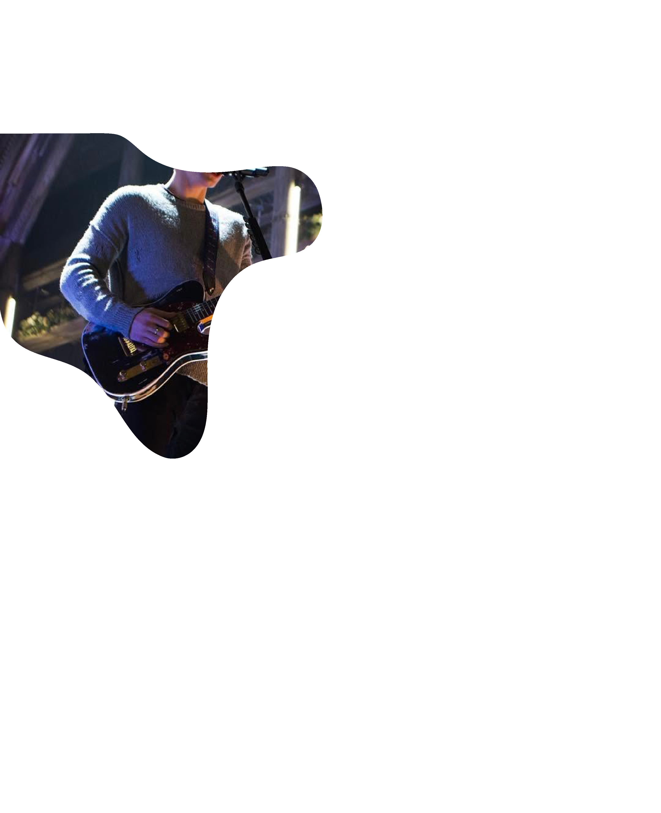
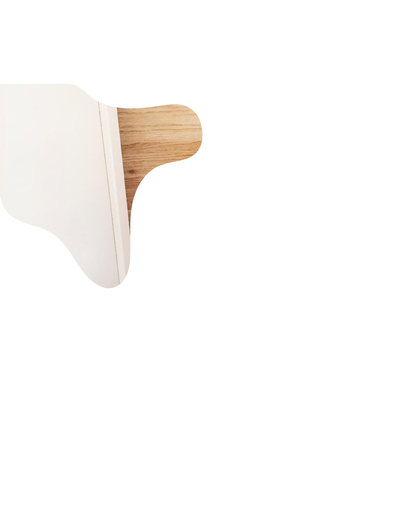

Welcome
to the internet
«Honestly I miss how unpolished everything felt. Posts didn't have to educate, convert or
"add value". People just posted vibes, blurry photos, inside jokes.» (@Visual-Sun-6018)
✦
People posted more frequently in 2016, in 2026 people don’t post a soften but consume just as much. (@CharlesIntheWoods)
✦
Photo dumps were very common a decade ago. People were still chronically online, the only difference is that the influencer craze was just beginning. (@didozer10)
✦
People posted more frequently in 2016, in 2026 people don’t post a soften but consume just as much. (@CharlesIntheWoods)
✦
Photo dumps were very common a decade ago. People were still chronically online, the only difference is that the influencer craze was just beginning. (@didozer10)


15. MÄRZ 2016
DIE REIHENFOLGE DER POSTS AUF DER USER*INNEN TIMELINE WIRD NEU VOM ALGORITHMUS BESTIMMT UND IST NICHT MEHR CHRONOLOGISCH.






15. AUGUST 2017
DIE KOMMENTARSPALTE IST IN THREADS ORGANISIERT, DAMIT EINFACHER AUF KOMMENTARE GEANTWORTET WERDEN KANN.



20. JUNI 2018
DAS FEATURE IGTV LAUNCHT, WODURCH LÄNGERE VIDEOFORMATE AUF INSTAGRAM GETEILT WERDEN KÖNNEN.


15. März 2016
Die Reihenfolge der Posts auf der User*innen Timeline wird neu vom Algorithmus bestimmt und ist nicht mehr chronologisch.